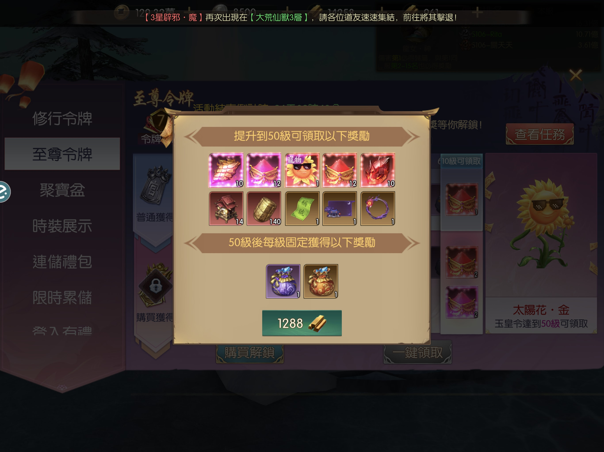
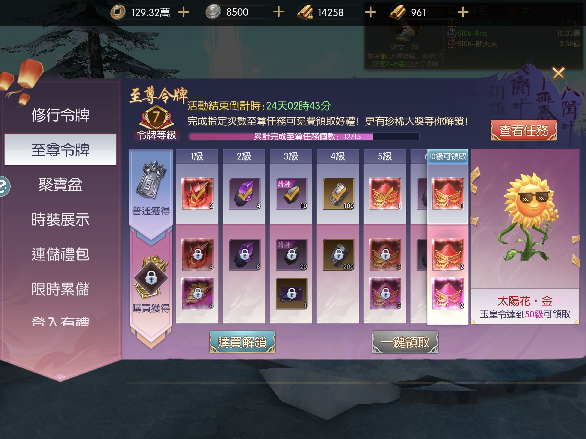
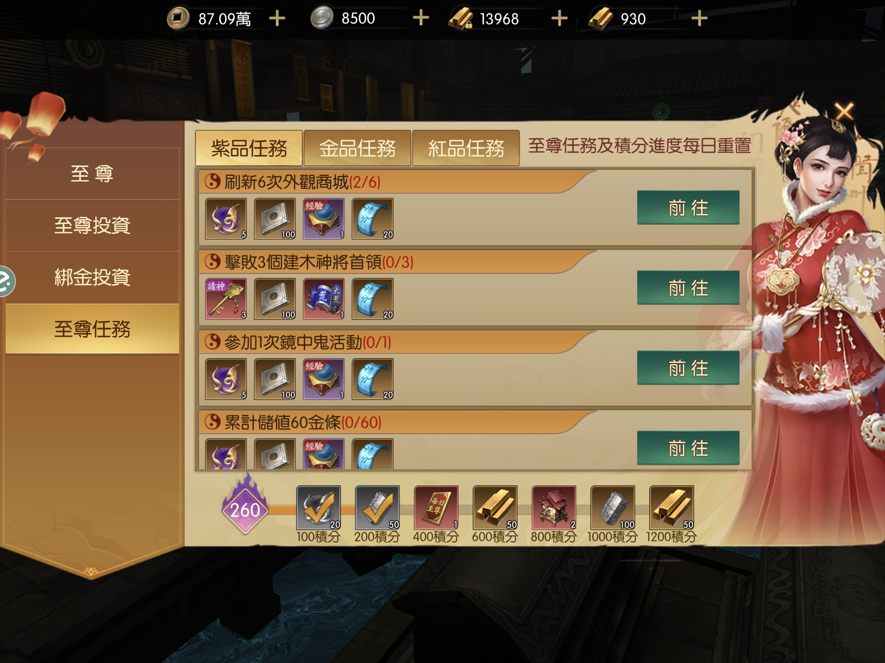
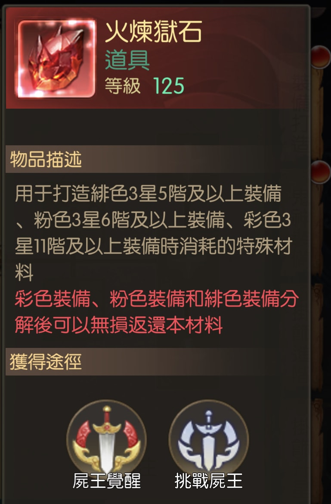
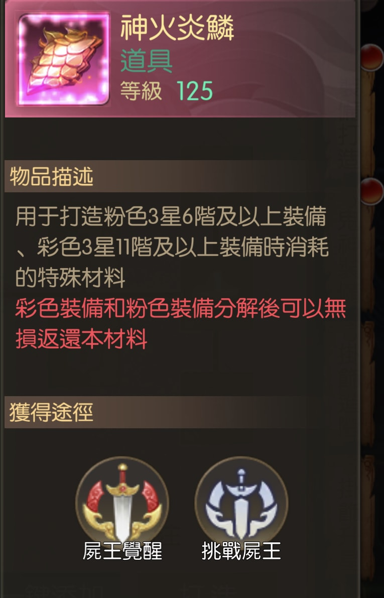
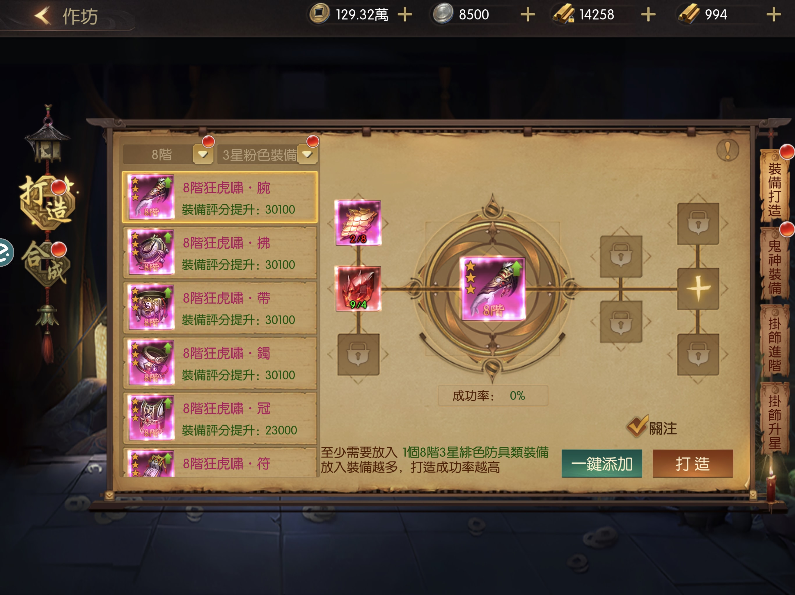
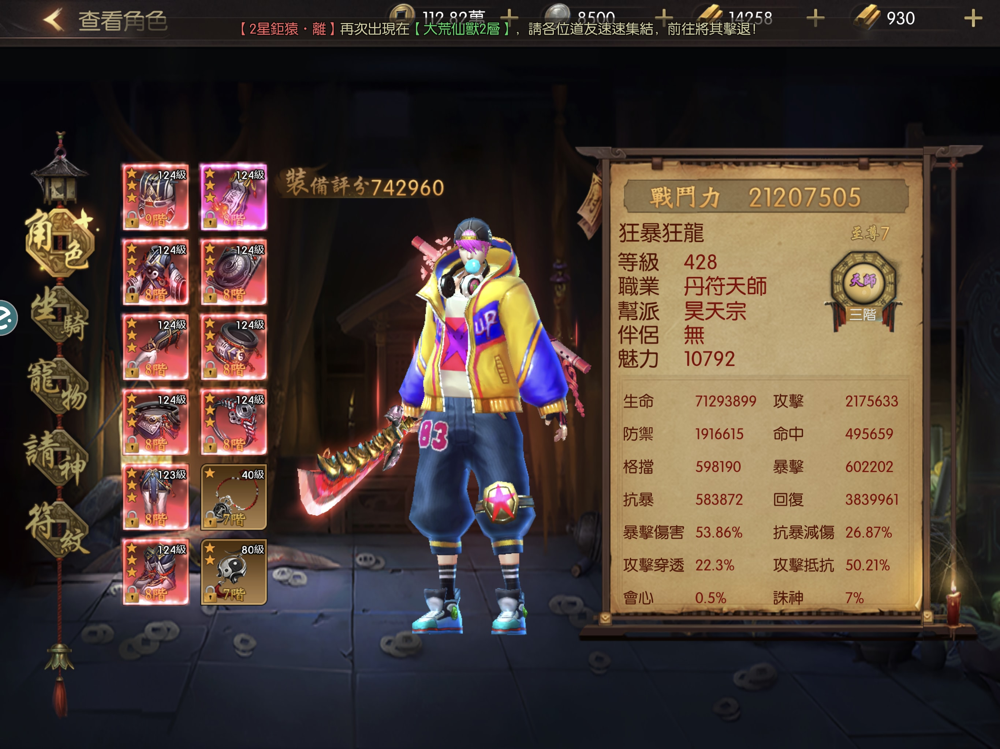

〈道士出觀---配裝分享〉Rita 的不負責任講座
1. 有金條就能出好裝，但金條不一定要課金呀～😎

這就是我們這次的目標↑
如何入手呢？


很簡單～ 快速得到 1288 金條，在『限時活動』→ 『至尊令牌』→ 花1288金條昇『玉皇令』
金條很簡單入手，如果說『儲值』，就一定是廢話。
其實可以透過做任務入手，
每天的大道爭鋒約可入手 40 金條 ↑

每日至尊任務可入手 50 金條 ↑
建木神將每一位可得 15 金條，做滿的話，就是60金條
建木神將每一隻可得 15 金條，做滿的話，就是60金條
所以一天的話，250金條以上，是妥妥的。 😏


重要的是『神火營鱗』及『火煉獄石』，是合成『緋色裝備』及『粉色裝備』的重要材料

所以～ 只要妳是滿身的『緋色裝備』，那怕平均只有八階，妳都可以吊打六爺～
如下圖：↓

嗯～ 不愧是人型暴龍啊～🤔